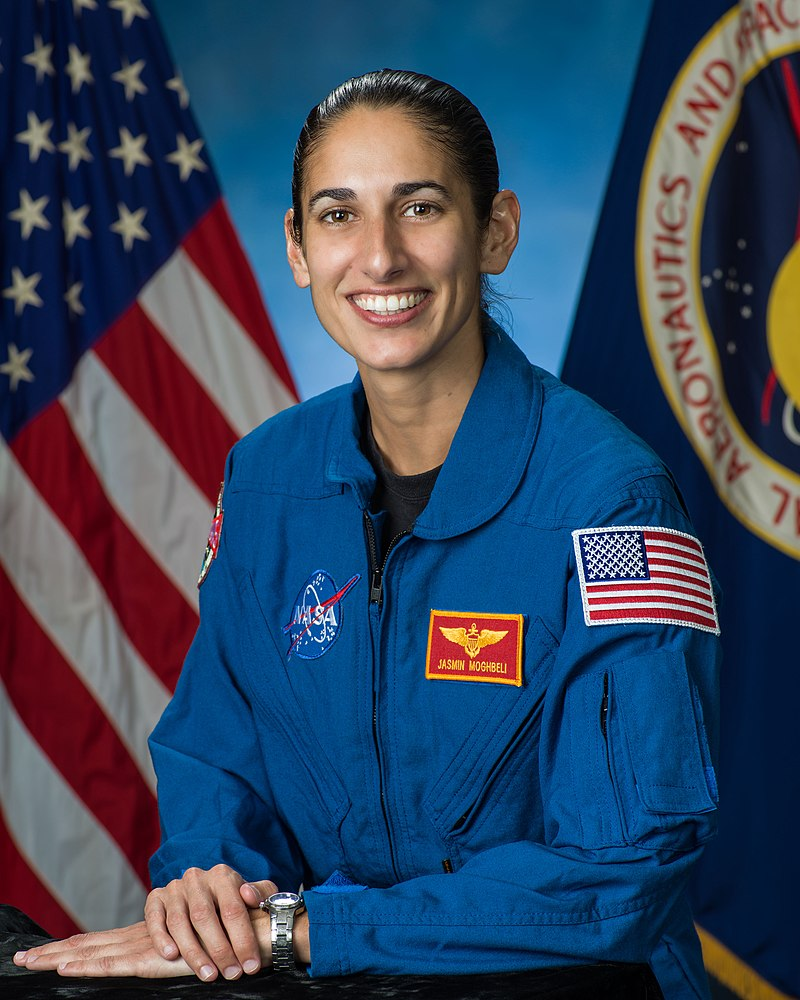

jasmin moghbeli
Jasmin Moghbeli (born June 24, 1983) is an Iranian American U.S. Marine Corps test pilot and NASA astronaut. She is a graduate of the Massachusetts Institute of Technology, Naval Postgraduate School,and Naval Test Pilot School, and as of 2019, has accumulated over 2,000 hours of flight time and flown in 150 combat missions, including sorties in Afghanistan.
Early life and education
Moghbeli was born on June 24, 1983 in Bad Nauheim, West Germany, to Fereshteh and Kamy Moghbeli. Her parents had fled Iran following the 1979 Islamic Revolution, and subsequently moved the family to Baldwin, New York. Moghbeli attended Baldwin Senior High School in New York and attended Advanced Space Academy at Space Camp in Alabama while she was a student. She earned a bachelor's degree in aerospace engineering with information technology at the Massachusetts Institute of Technology (MIT), and played volleyball and basketball for the MIT Engineers.
Military career
Moghbeli was commissioned as an officer in the United States Marine Corps in 2005, and trained to become an AH-1 Super Cobra pilot.While in service with the Marine Corps, she deployed overseas three times and completed 150 combat missions. Moghbeli received a master's degree in aerospace engineering from the U.S. Naval Postgraduate School in California and also attended the U.S. Naval Test Pilot School at Patuxent River Naval Air Station in Maryland, becoming a helicopter test pilot with VMX-1 at Marine Corps Air Station Yuma in Arizona.
NASA career
In June 2017, Moghbeli was selected as a member of NASA Astronaut Group 22, and subsequently began her two-year training. In January 2020, she graduated alongside 13 others in the NASA Astronaut Candidate Training Program, officially making her "eligible for spaceflight, including assignments to the International Space Station, Artemis missions to the Moon, and ultimately, missions to Mars.
Awards and honors
Moghbeli has received four Air Medals, the Navy and Marine Corps Commendation Medal, and three Navy and Marine Corps Achievement Medals. She has received the U.S. Navy Test Pilot School Class 144 Outstanding Developmental Phase II Award and the Commander Willie McCool Outstanding Student Award as the Class 144 Honor Graduate.
|  | |
| Born | June 24, 1983 (age 37) Bad Nauheim, West Germany |
|---|---|
| Status | Active |
| Citizenship | United States |
| Alma mater | Massachusetts Institute of Technology (BS) Naval Postgraduate School (MS) |
| Space career | NASA Astronaut |
| Current occupation | Test pilot |
| Rank | Major, USMC |
| Selection | NASA Group 22 |